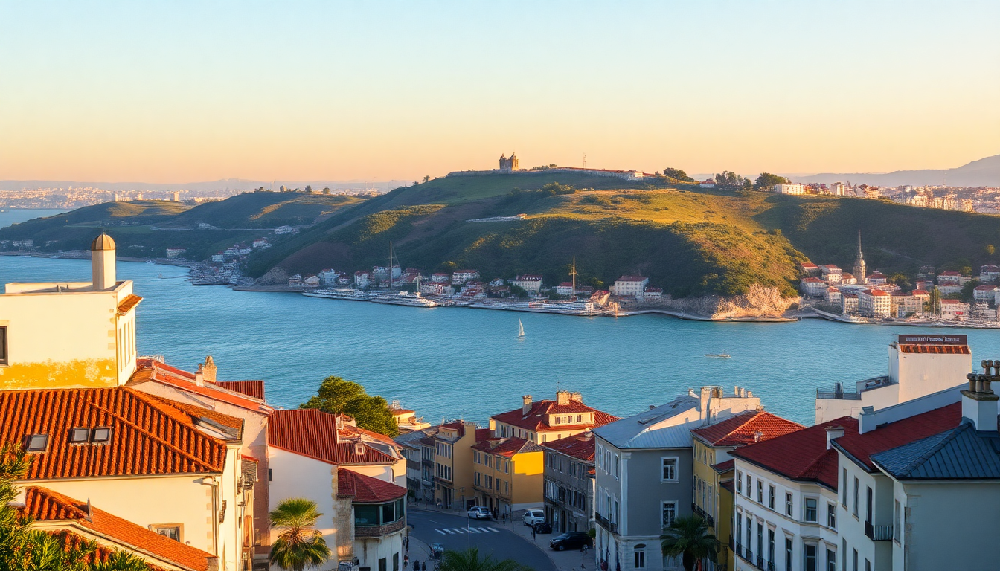

7 Day Portugal Itinerary: Lisbon, Porto & the Algarve

One week in Portugal is tight—I won’t sugarcoat it. But with a little planning, you can hit three distinct regions without feeling like you’re sprinting through airport security. This itinerary skips the fluff and tells you exactly how to connect Lisbon, Porto, and the Algarve by train, where to sleep, and what’s actually worth your time. I did this loop last spring, and here’s what worked.
Is seven days enough for Lisbon, Porto, and the Algarve?
Barely, but yes—if you commit to moving fast and packing light. The key is using high-speed trains between cities and keeping your Algarve base simple. I spent two nights in Lisbon, two in Porto, and two in Faro (with a day trip to Lagos). You’ll lose half a day to travel twice, but the train rides are scenic and comfortable.
My time breakdown that worked:
- Days 1–2: Lisbon — hit the hills early, eat pastéis de nata, ride Tram 28 once for the novelty
- Day 3: Morning train to Porto (3 hours on the Alfa Pendular), afternoon exploring Ribeira
- Days 4–5: Porto — port wine lodges, Livraria Lello (book ahead), one day trip to Douro Valley
- Day 6: Train from Porto to Faro (5.5 hours, change in Lisbon), evening walk along the marina
- Day 7: Lagos day trip for Benagil Cave and Ponta da Piedade, then fly out from Faro
What’s the best way to get between Lisbon and Porto?
The Alfa Pendular train is the only sane option. It runs hourly from Santa Apolónia or Oriente stations in Lisbon to São Bento or Campanhã in Porto. Book tickets on the CP website at least a week in advance—prices jump from €15 to €40+ if you buy same-day. The ride takes 2 hours 45 minutes, and the WiFi is spotty, so download a podcast.
Train tips I learned the hard way:
- Book first-class (Conforto) for reclining seats and a quiet car — it’s only €5–10 more
- Pack snacks — the onboard café runs out of sandwiches by mid-morning
- Sit on the left side heading north for river views near Aveiro
- Avoid the 7am train unless you enjoy sharing a car with loud tour groups
Where should I stay in Lisbon for two nights?
I booked a room at Hotel da Baixa in the Baixa/Chiado neighborhood, and it was the right call. You’re walking distance to the waterfront, Rossio Square, and the Elevador de Santa Justa. The room was small but quiet, and the breakfast buffet had fresh orange juice and decent coffee. If you want something cheaper, look at Dear Lisbon - Gallery House in Príncipe Real — it’s quirky and has a rooftop terrace.
Lisbon neighborhoods ranked for first-timers:
- Baixa/Chiado — central, flat, touristy but convenient
- Alfama — authentic Fado vibes, but steep hills and narrow alleys
- Príncipe Real — trendy, quieter, good restaurants
- Bairro Alto — nightlife central, loud after 10pm
What’s worth doing in Porto besides port tasting?
Port tasting is fun for exactly one afternoon. After that, skip the tourist-trap lodges on the Vila Nova de Gaia side and head for Taylor’s — it’s the most informative tour, and the tasting room has a garden. For non-port stuff, walk across the Dom Luís I Bridge at sunset, and book a timed ticket for Livraria Lello (€5-8, redeemable against a book). The bookstore is gorgeous but packed; go at 9am on a weekday.
My Porto must-dos (in order):
- Walk the Ribeira riverfront — grab a coffee at Café Santiago for their famous francesinha sandwich
- Visit Igreja de São Francisco — the gold-leaf interior is absurdly ornate
- Take the São Bento train station detour — the azulejo tile panels tell Portuguese history
- Day trip to Douro Valley — book a half-day tour from Porto that includes a river cruise and wine lunch
Can I see the Algarve in one day from Faro?
You can see a slice. Faro itself is a working city, not a resort. The real Algarve action is west: Lagos and Benagil Cave. I took a 7:30am train from Faro to Lagos (1 hour, €6), then joined a small boat tour that explored the caves and stopped at Ponta da Piedade for cliff views. The tour lasted 2.5 hours and cost €35. By 4pm I was back in Faro with time for a swim at Ilha Deserta (ferry from Faro’s old town).
Algarve reality check:
- Benagil Cave is beautiful but crowded — go at 9am or skip it for quieter Praia da Marinha
- Lagos old town is walkable and has good seafood at Tasca do Kiko
- Faro’s airport is small — arrive 1.5 hours early, not 2
- Renting a car is faster but parking in Lagos is a nightmare in summer
Is the food in Portugal overhyped?
Mostly no, but the tourist menus are. Skip any place on the main square in Lisbon or Porto that has a picture menu in English. Instead, look for tascas (small family-run spots) with handwritten specials. In Lisbon, I ate grilled sardines at Cervejaria Ramiro (worth the queue) and a pork sandwich at Manteigaria (better pastéis de nata than Belém). In Porto, Casa Guedes makes a legendary pork leg sandwich with Serra da Estrela cheese.
Food rules I follow:
- Pastéis de nata — eat them warm, not from a display case
- Bacalhau (cod) — there are 365 recipes, but bacalhau à brás is the most accessible
- Vinho Verde — the green wine is crisp and cheap, order it by the glass
- Francesinha — a gut-bomb sandwich, share it with a friend
FAQ
Is it better to rent a car or take trains in Portugal? Trains are better for the Lisbon–Porto–Faro triangle. The Alfa Pendular and Intercidades lines are reliable, and parking in city centers is expensive and scarce. Rent a car only if you plan to explore the Algarve’s small coves or the Douro Valley’s vineyards beyond the main towns.
How much should I budget per day for food and activities? Budget €50–70 per day per person for mid-range meals, one attraction, and local transport. A pastel de nata costs €1.20, a glass of vinho verde €2–3, and a main course at a tasca €10–15. High-end tasting menus in Porto run €50–80, but I’d skip them for street food.
What’s the best month for this itinerary? May or September. April is rainy, June through August is crowded and hot (35°C+ in the Algarve), and October sees shorter days. I went in early May and had sunny days without queues at Benagil Cave.
Conclusion
- Move fast but smart — trains beat cars for this route, and book tickets early to save money
- Eat where locals eat — tascas and market stalls beat Instagram-friendly restaurants every time
- Pack layers — Lisbon and Porto get windy evenings even in summer; the Algarve stays warm
- Book Livraria Lello and Benagil Cave tours ahead — walk-ins waste hours in queues
- Don’t try to do everything — skip Sintra or Coimbra this trip; they deserve their own week